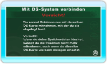
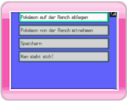
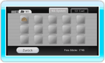

13 |
Verbindung mit einem Nintendo DS-System |
 |
Mithilfe eines Nintendo DS-Systems kannst du Pokémon, die du in Pokémon Diamant-Edition oder Pokémon Perl-Edition gefangen oder getauscht hast, auf der Ranch ablegen oder wieder mitnehmen.

Wii-Bildschirm Wenn du im Hauptmenü von My Pokémon Ranch den Menüpunkt VERBINDUNG MIT NINTENDO DS-SYSTEM auswählst, wird der rechts dargestellte Bildschirm angezeigt.
Nachdem du den Warnhinweis gelesen hast, drücke Wenn der unten dargestellte Bildschirm von My Pokémon Ranch erscheint, schalte dein Nintendo DS-System mit eingelegter Pokémon Diamant-Edition- oder Pokémon Perl-Edition-Karte ein. Wähle im Startmenü von Pokémon Diamant-Edition oder Pokémon Perl-Edition den Menüpunkt MIT Wii VERBINDEN.
Ist die Verbindung erfolgreich, erscheinen die unten dargestellten Bildschirme auf der Wii-Konsole bzw. dem Nintendo DS-System. Hinweis: Du kannst den Betreuer jederzeit wechseln.

Nintendo DS-Bildschirm Auf dem oberen Bildschirm des Nintendo DS-Systems wird das Hauptmenü angezeigt. Wähle einen Menüpunkt aus und drücke Hauptmenü (Nintendo DS-System)
Weitere Informationen findest du in den Abschnitten

Wii-Bildschirm ● Abgelegte Pokémon Die Ranchdaten werden auf der Wii-Konsole gespeichert. Du kannst über den Datenver-waltungs-Bildschirm auf sie zugreifen. Hinweis: Wenn du den Speicherstand löschst, verlierst du alle auf der Ranch abgelegten Pokémon und kannst sie nicht wieder auf deine Karte übertragen. Ein einmal gelöschter Speicherstand kann nicht wiederhergestellt werden. |
 .
. |
 |
 |